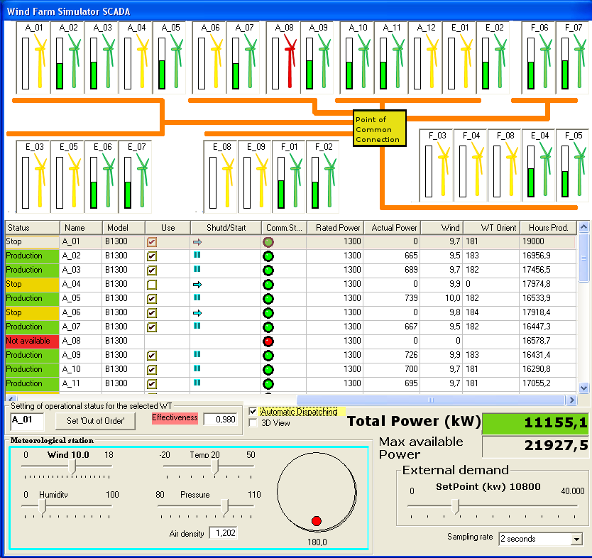

Imparare facendo
I simulatori in tempo reale di ACMSL sono progettati per l'acquisizione pratica delle competenze. A differenza delle presentazioni statiche o degli esercizi da manuale, i nostri simulatori riproducono il comportamento reale delle turbine eoliche industriali in tempo reale, consentendo ai formandi di sviluppare intuizione e competenze operative in un ambiente sicuro e controllato.
Ogni simulatore include tutorial integrati con esercizi pratici guidati passo dopo passo che accompagnano il discente dai concetti di base fino a scenari operativi avanzati. I tutorial sono progettati per l'apprendimento autonomo, consentendo ai professionisti di imparare al proprio ritmo.
I 4 simulatori
Consigliamo di seguire i simulatori nell'ordine presentato di seguito. Ciascuno si basa sui concetti appresi nel precedente, creando un'esperienza di apprendimento progressiva e coerente.

1. Centro di Controllo SCADA Parco Eolico
Iniziate con la visione d'insieme. Questo simulatore riproduce un centro di controllo completo di un parco eolico, comprensivo di più turbine eoliche, una sottostazione elettrica, torre meteorologica e punto di connessione alla rete. Imparate come un parco eolico funziona come sistema: monitoraggio della produzione, gestione degli allarmi, controllo remoto e interazione con la rete.
Temi principali: Interfaccia SCADA, topologia del parco eolico, operazioni della sottostazione, dispacciamento della potenza, gerarchie degli allarmi, interpretazione dei dati meteorologici.

2. Active Stall a Doppia Velocità (DSAS)
Padroneggiate i fondamenti. Questo simulatore modella una turbina eolica della Famiglia 2 con generatore a induzione a gabbia di scoiattolo a doppia velocità e controllo pitch active stall. È il punto di partenza ideale per comprendere i concetti fondamentali di una turbina eolica senza la complessità dell'elettronica di potenza.
Temi principali: Sequenze di avvio/arresto, commutazione di velocità, regolazione active stall, controllo dell'imbardata, gerarchia del sistema di sicurezza, soglie operative del vento, limitazione della potenza.

3. Controllore a Resistenza Rotorica (RRC)
Comprendete la velocità variabile. Questo simulatore modella una turbina eolica della Famiglia 3 con generatore a induzione a rotore avvolto e resistenza rotorica variabile. Imparate come la variazione controllata della velocità migliora la cattura di energia e fornisce tolleranza alle raffiche di vento — l'innovazione chiave che ha aperto la strada ai moderni design DFIG.
Temi principali: Controllo della resistenza rotorica variabile, caratteristiche velocità-coppia, assorbimento delle raffiche tramite energia cinetica, controllo dello scorrimento, gestione della dissipazione dell'energia.

4. Turbina Eolica DFIG
Padroneggiate lo standard dell'industria. Questo simulatore modella la famiglia di turbine eoliche più installata al mondo: il Generatore a Induzione a Doppia Alimentazione (DFIG). Comprendete come il convertitore Back-to-Back controlla la potenza attiva e reattiva in modo indipendente, abilitando capacità complete di supporto alla rete e conformità con i moderni codici di rete.
Temi principali: Funzionamento del convertitore Back-to-Back, controllo della potenza attiva/reattiva, conformità ai codici di rete, protezione crowbar, MPPT (Maximum Power Point Tracking), regolazione della tensione, risposta in frequenza.
Strumenti di ingegneria
Oltre ai simulatori, ACMSL fornisce strumenti di ingegneria specializzati per analisi tecniche approfondite:
Calcolatore della Curva Operativa (MPPT)
Progettate e analizzate la curva operativa ottimale potenza-velocità per turbine eoliche a velocità variabile. Questo strumento calcola la curva MPPT (Maximum Power Point Tracking) basata sulle caratteristiche aerodinamiche della turbina, permettendo agli ingegneri di comprendere come il rapporto ottimale di velocità di punta delle pale si traduce in punti operativi reali.
Applicazioni: Design della curva MPPT, stima della produzione energetica, ottimizzazione del carico parziale, confronto di diverse strategie di controllo.
Analizzatore DFIG Back-to-Back
Analizzate in dettaglio il comportamento elettrico del convertitore DFIG Back-to-Back. Questo strumento fornisce visualizzazione e analisi del funzionamento del convertitore lato rotore e lato rete, inclusi i vettori di corrente, i flussi di potenza e la relazione tra velocità meccanica, frequenza elettrica e scorrimento.
Applicazioni: Dimensionamento del convertitore, analisi del flusso di potenza, valutazione della capacità di potenza reattiva, verifica del punto operativo.
Cosa distingue i nostri simulatori
Simulazione in tempo reale
I nostri simulatori funzionano in tempo reale, riproducendo il comportamento temporale effettivo delle turbine eoliche. Quando comandate un cambio di pitch, le pale impiegano lo stesso tempo a ruotare di una macchina reale. Quando il vento cambia, l'inerzia del rotore risponde con costanti di tempo realistiche. Questa fedeltà temporale è essenziale per sviluppare l'intuizione operativa.
Tutorial integrati
Ogni simulatore include tutorial completi che combinano teoria e pratica. Si legge di un concetto e poi lo si applica immediatamente nel simulatore. Questo approccio impara-poi-fai accelera drasticamente l'acquisizione delle competenze rispetto alla formazione esclusivamente in aula.
Ambiente di apprendimento sicuro
Gli errori su una turbina eolica reale possono causare danni per centinaia di migliaia di euro o mettere in pericolo vite umane. I nostri simulatori permettono ai formandi di esplorare condizioni limite, attivare allarmi e persino far fermare la turbina — il tutto senza conseguenze. Imparare dagli errori è uno dei metodi di formazione più efficaci, e la simulazione lo rende sicuro.
Fedeltà di livello professionale
I modelli fisici alla base dei nostri simulatori si fondano sulla teoria consolidata delle macchine elettriche, sui modelli aerodinamici e sull'ingegneria dei sistemi di controllo. I simulatori riproducono fenomeni che i professionisti incontrano nelle operazioni reali: magnetizzazione del generatore, oscillazioni di coppia, fluttuazioni della tensione di rete ed effetti della turbolenza del vento.
Provate i nostri simulatori in tempo reale
Valutazione gratuita di 2 giorni — accesso completo a tutti e 4 i simulatori e gli strumenti di ingegneria
Scarica ora